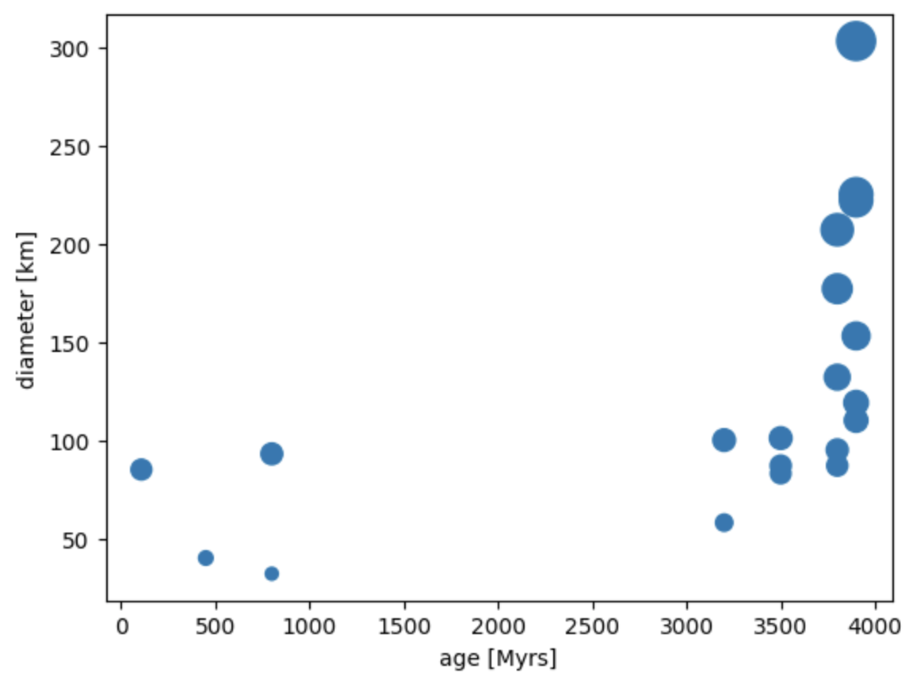
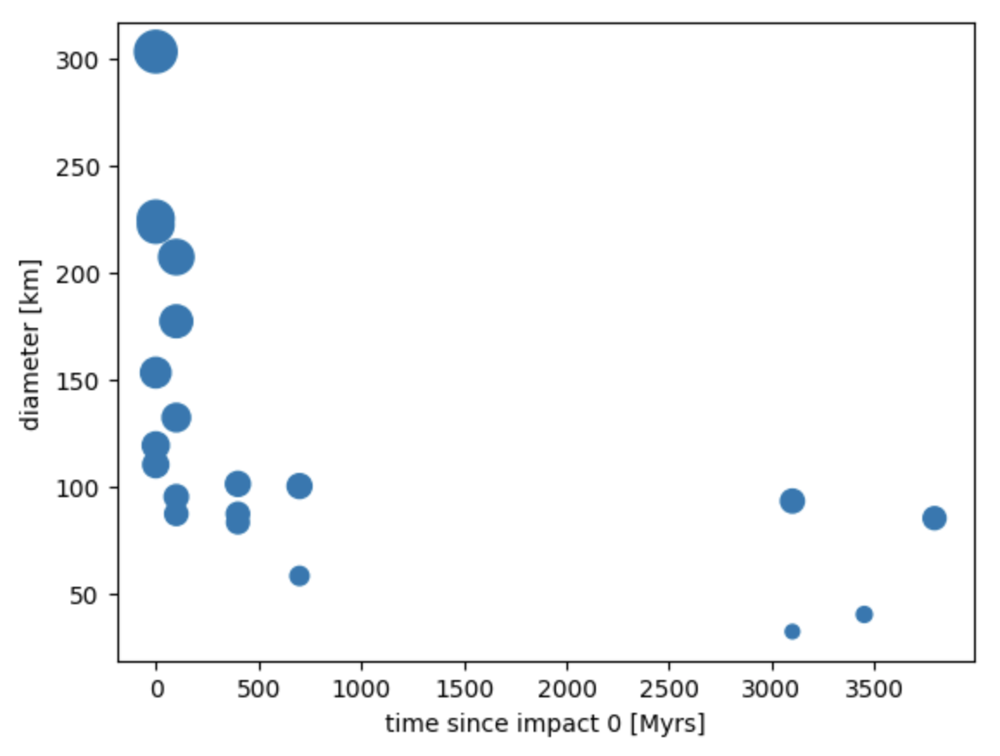
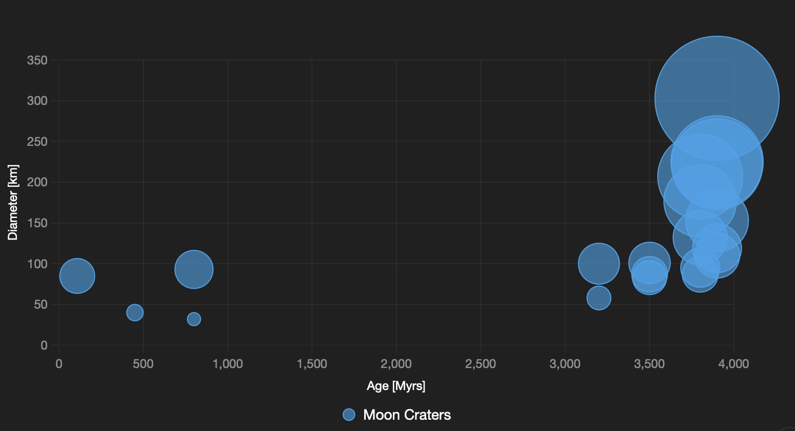
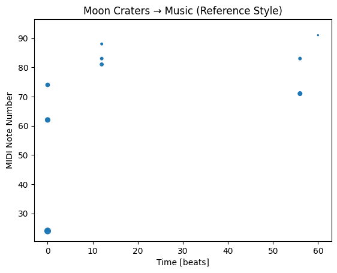
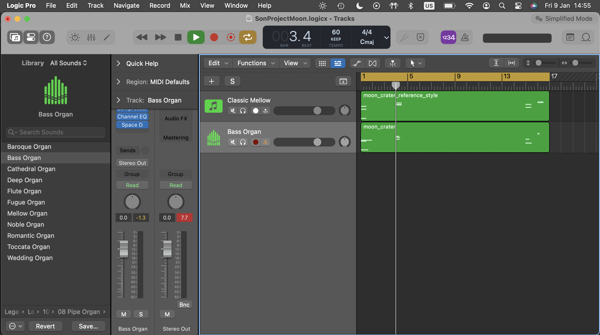
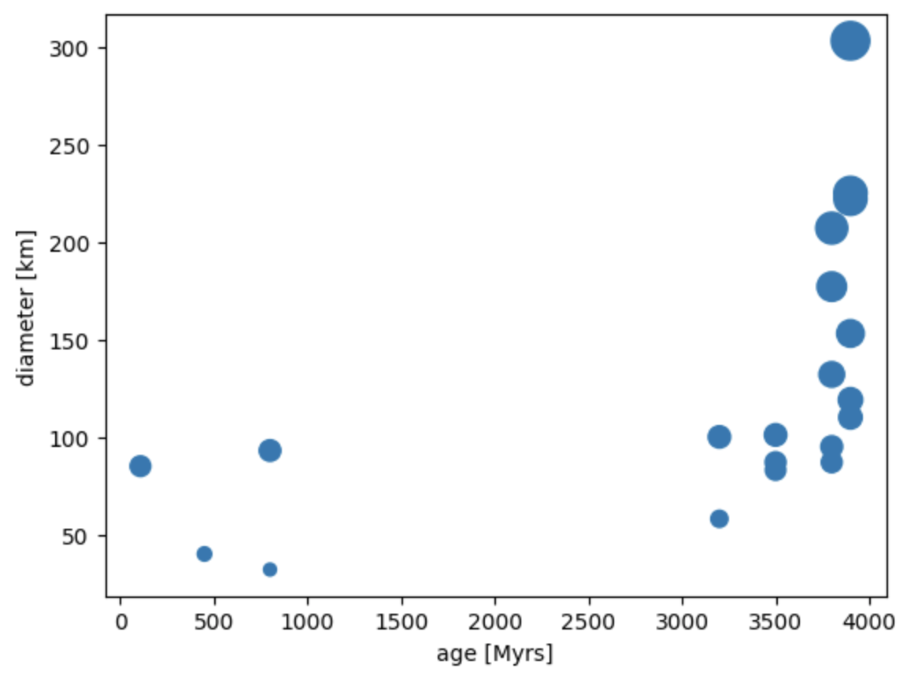
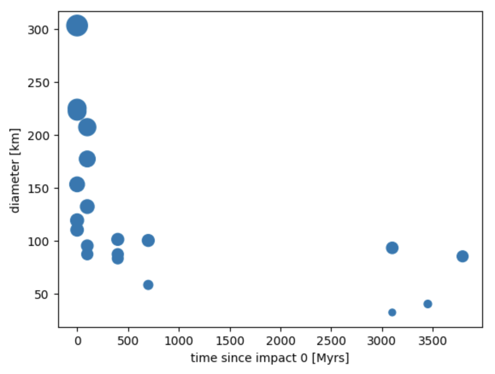
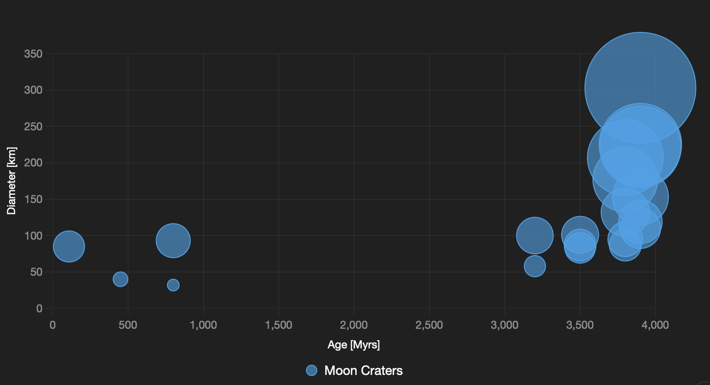
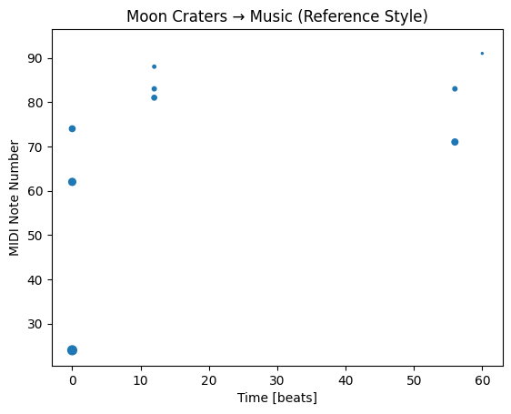
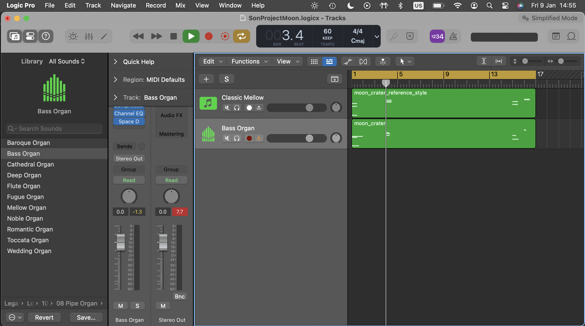

Title
Case 2: Open Space Data Sonification
Subtitle
Translating between space, visual and sounds
Date
Jan 2026
Guiding Question
How can sonification enhance the perception of open spaces?
Tools
Terminal, Python, numpy, pandas, matplotlib, midiutil, AI (Grok, Claude)
Collaborators, Context
Independent project inspired by astronomer friends, space engineering colleagues, and musicians; exploring science-art overlap with NASA's open datasets
Process
 











Environment setup with Python libraries; data selection and cleaning from NASA portal; mapping parameters to musical elements; MIDI generation and audio testing
Play sound with Sound Button ♫
(End of Page)
Explanation / Prompt / Learning
- Hybrid workflow: AI for code structure and debugging
- Manual design for sonification mappings
- Balance between scientific accuracy and artistic expression
Impacts, Results, Follow up
Improved data accessibility; follow-up: public installations.
The most interesting things happen when something new enters space.